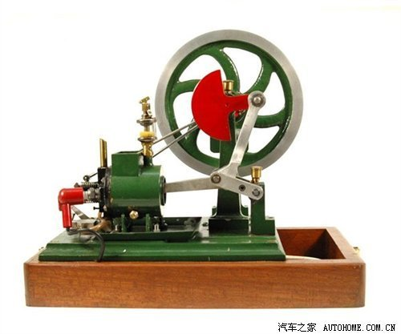

度解读发动机 阿特金森和米勒循环
汽车之家| 2011-10-08 05:29
1发动机运转形式
怎样有效地利用燃油产生的能源，是提升发动机效率的一大关键，自发动机诞生之日起，这个课题就一直在进行。从19世纪末的阿特金森循环，到上世纪40年代的米勒循环，压缩比这个原本恒定的数值，被一种“另类”的运转机制打破。
话题又一次扯到“压缩比”这个问题上。想要提升动力，提高压缩比是一个手段。想要提高燃油经济型，提高压缩比也是一个手段。但压缩比不能无限提升，而且在发动机历史中的“远古时代”，这个问题就更难解决了。不过人类的智慧经常另辟蹊径，既然无法提高压缩比，那就把“膨胀比”搞大。

● 阿特金森循环发动机
1882年，James Atkinson发明了一款发动机，与当时的奥托循环发动机不同的是，这款发动机压缩行程和做功行程时，活塞的位移是不一样的。阿特金森发动机使用了较为复杂的连杆作为动力从活塞到曲轴的输出，而活塞实际行程如下图所示（阿特金森发动机活塞行程较长，动画中未予表现）。
活塞行程由蓝黄红绿四个色块表示，依次为：吸气、压缩、做功、排气四个行程
这种设计很巧妙，用不同的连杆机制协同工作，使得各个行程幅度不同，不仅有效的改良了进排气情况，膨胀比大于压缩比更是阿特金森发动机最大的特点。更长的膨胀行程可以更有效的利用燃烧后废气仍然存有的高压，所以燃油效率也比奥托循环更高一些。
连杆的引入不仅影响了活塞行程，作用在曲轴上的力矩发生了改变
但复杂的连杆在体积上和故障情况都不如奥托发动机，所以在汽车上未能普及，不过船用、发电等大型柴油机在很大程度上借鉴了阿特金森发动机这种特性，可谓失之东隅收之桑榆。至于用晚闭进气门的方式，让压缩比小于膨胀比的形式是否存在于阿特金森发动机，目前无从考证（很多文献都认为阿特金森循环运用了晚闭进气门这个方式，但并无依据，连杆机构对压缩比的调整和较长的活塞行程才是阿特金森发动机的特色），但真真正正运用这种技术的，是下面这种发动机。
● 米勒循环发动机
1940年，miller重拾这种不对等膨胀/压缩比发动机，但舍弃了复杂的连杆结构，而是采用配气时机来制造这种效果。其解决方式为：在吸气冲程结束时，推迟气门的关闭，这就将吸入的混合气又“吐”出去一部分，再关闭气门，开始压缩冲程。
上图为常规奥拓循环发动机配气相位，下图为米勒循环配气相位
对比常规发动机，米勒循环进气门晚闭，将吸入气体
部分反流排出，排气门晚开，使做功时间加长
这么简单的控制一个气门开闭的时机就制造了膨胀比大于压缩比的效果，相比传统奥托循环发动机，废气蕴含的能量得以利用。（ps：难道当年阿特金森不会想到用这种方式实现吗？私认为应该是因为奥托循环发动机的专利的问题，因而阿特金森不得不那么做，而到了米勒的年代，奥托发动机的专利已经过期了。）
1-2-3-4为传统发动机PV图，6-2-3-5为阿特金森/米勒循环PV图
阴影部分可以理解为阿特金森/米勒额外的活塞行程及其利用的能量
2先天缺陷
● 这类发动机的缺陷
很多读者会意识到，有了可变进气正时技术，这种技术是非常容易实现的，但为什么这种技术未能普及广泛发动机之上呢？其原因如下：
◆ 1、 独特的进气方式让低速扭矩很差
在低速时，本来就稀薄的混合气在“反流”之后变得更少，这让该类发动机低速扭矩表现很差，用于车辆起步显然动力不够，谁都不愿意自己的爱车输在起跑线上，厂商也不愿因此而让自己的商品落后于别家。
◆ 2、长活塞行程不利于高转速运转
较长的活塞行程确实可以充分的利用燃油的能量，提升经济性，但也因此限制了转速的升高，加速性能也变差，并且“升功率”这个性能指标会很低。而追求性能，尤其是追求高速性能的赛车发动机，往往行程与活塞直径的比值会很低。在民用车上，为了平衡，通常行程与缸径两个数据是接近的。
这就让阿特金森/米勒循环发动机的处境非常尴尬，只在转速的中间阶段才能有效发挥动力，这对于每天在路况复杂的城市交通中形式的汽车非常不利，所以普通汽车不会使用这种技术。但还有很多不平凡的汽车。
● 现代阿特金森/米勒循环发动机
从现实情况来看，目前市面上鲜有阿特金森循环发动机。虽然丰田普锐斯宣称使用了阿特金森发动机，但从实际结构来看，本质上是米勒循环的方式。这是因为在1993年，马自达重拾米勒循环发动机，装备量产车上，为避免更多的麻烦，丰田只能说自己是阿特金森循环了。
不过两家公司走的是两个不同的思路，马自达使用米勒循环发动机是为了用这种方式降低爆震提升动力，因而装备了机械增压器来进一步提升动力（很令人费解）。而丰田普锐斯是以节油为目的，发挥了阿特金森/米勒循环发动机的实质优势。
使用了机械增压的米勒循环Mazda 2.3S发动机
该款发动机装备在mazda Millenia之上
因为阿特金森/米勒循环发动机这种充分利用能源的特点，故被各种节油的混合动力车型看中，它们并不在乎低速的“不在状态”和高速的“不中用”，因为这两个时段有电动机在为车轮提供动力，发动机的大多时段都是在发电，所以发动机可以在在油耗最优异的转速运转。用电动机的大扭矩弥补动力的缺陷，互补之后的动力总成，让混合动力车在动力和经济型上都有着突出的表现。
然而想要通过阿特金森/米勒循环来制造高功率的发动机也许不大合适，马自达的发动机即便已经量产却未得以发展，功率的提升也基本上是增压带来的功效而非该循环原本的意图。所以阿特金森/米勒循环更多的被用于混动汽车之上，省油才是它的职责。